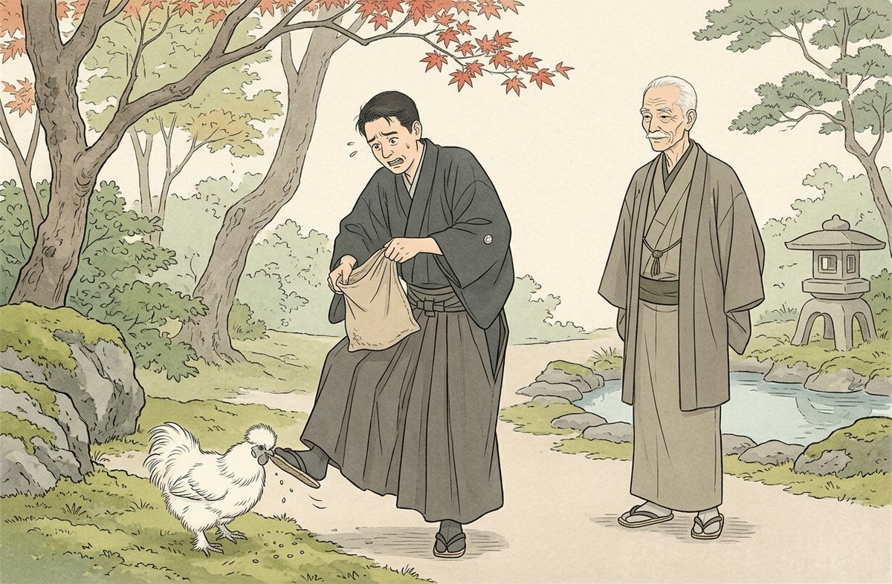
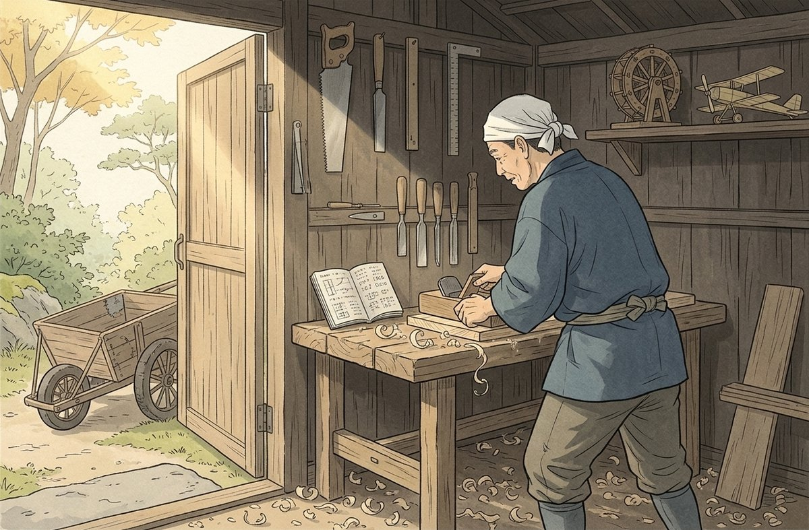
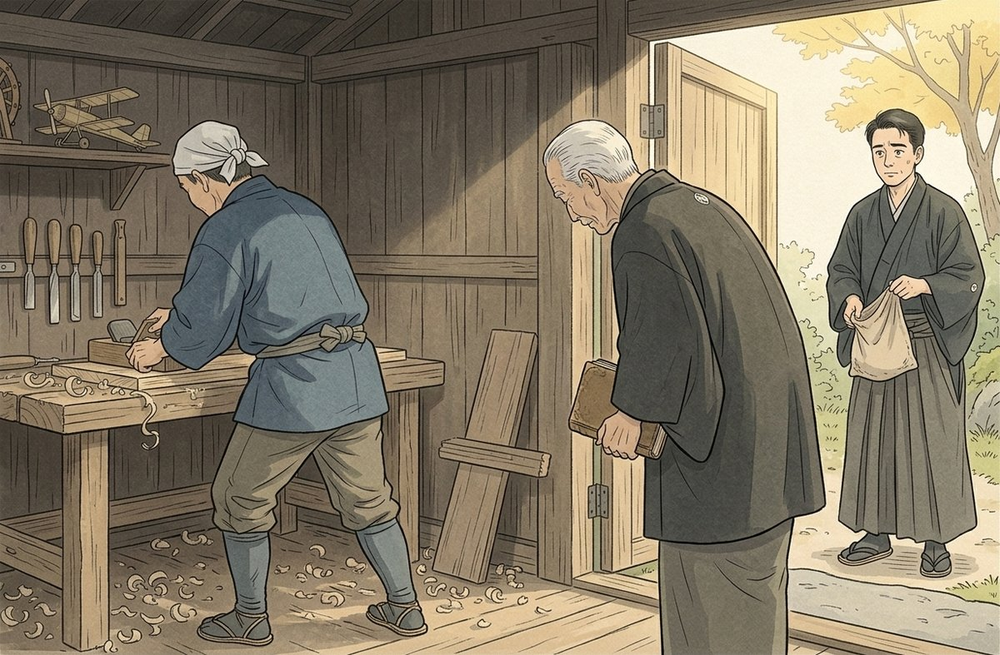

庭師は、偉い人ではない。法皇が最後まで頭を下げた相手は、軍人でも、政治家でもなかった。山縣は、手で何かを作る人間を、信用していた。そう読むのが、一番、しっくりくる。
四分類：骨格は、山縣が庭づくりに力を入れたこと、古稀庵が小田原にあったこと、西行の歌が好まれていたこと（歌を愛したとされる）。推理は、山縣が実務の手を持つ人間を信用したという読み。創作は、既出の庭師源吉の小屋の描写、和算の手帳、一輪車、孫の工作、左甚五郎の本、烏骨鶏、伊藤・大隈の本がない書棚、源吉覚え書のすべて。保留は、実際の山縣の蔵書の構成と、庭師との関係の実際。
索引：和算＝日本で独自に発達した数学。算盤と筆算で、図形や数の問題を解いた｜含意：実学の水脈。／左甚五郎＝江戸初期の名工と伝わる伝説的な宮大工。実在は確かでない｜含意：手の技の象徴として本を開く。／烏骨鶏＝白い絹のような羽をもつ鶏｜含意：庭の小さな居候。
挿絵はAIで作成しました。